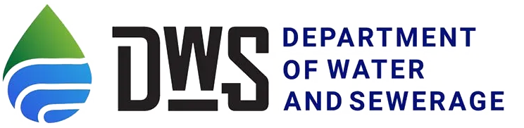
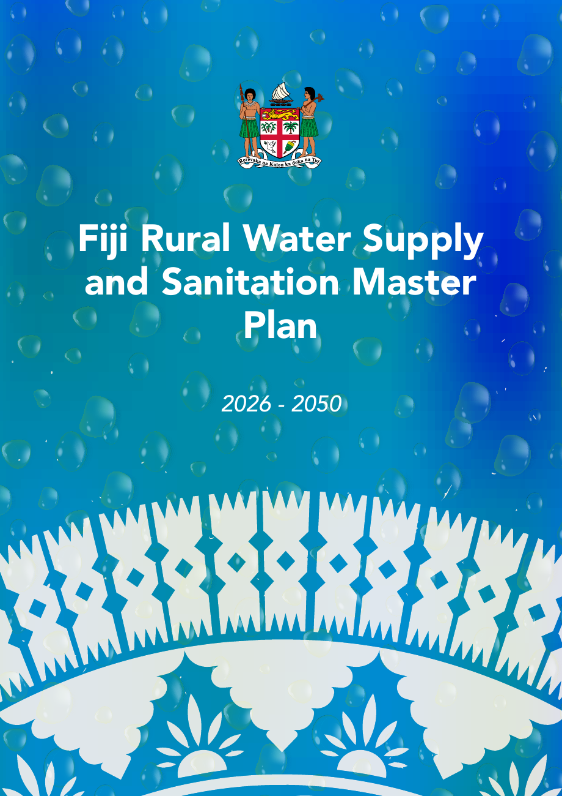

NATIONAL LAUNCH CEREMONY 2026

OFFICIAL LAUNCH
FIJI RURAL WATER SUPPLY & SANITATION MASTER PLAN
2026 — 2050
A long-term vision for safe water, dignified sanitation and resilient rural communities across Fiji.
OFFICIAL LAUNCH
FIJI RURAL WATER SUPPLY & SANITATION MASTER PLAN
2026 — 2050
A long-term vision for safe water, dignified sanitation and resilient rural communities across Fiji.
TO BE OFFICIALLY LAUNCHED BY
Honourable Minister for Public Works,
Meteorological Services and Transport
Meteorological Services and Transport
Ro Filipe Qaraniqio Tuisawau
FIJI'S WATER FUTURE
THE OFFICIAL COUNTDOWN
10

Fiji's Water and Sanitation Future
OFFICIALLY LAUNCHED
FIJI RURAL WATER SUPPLY AND SANITATION MASTER PLAN
2026 — 2050